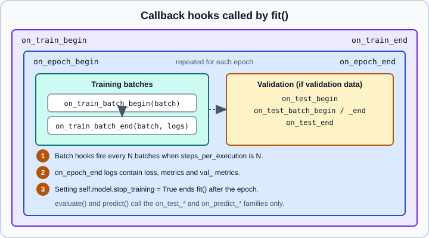

Callbacks
|
This content was generated with the assistance of AI and should be verified against the official documentation before being relied on in production. |
A callback is an object whose methods Keras calls at fixed points during fit(), evaluate() and predict(). Callbacks add behaviour around the training loop without changing it: saving the best model, stopping when validation stops improving, lowering the learning rate, writing logs, resuming after a crash, or anything you can write in Python. This page explains the hook lifecycle, the built-in callbacks and how to write your own. The methods that call them are on compile, fit, evaluate & predict; changing what happens inside a step is on Customizing fit() with train_step; learning-rate theory is on Optimizers and Learning-Rate Schedules and its Keras counterpart Optimizers & Learning-Rate Schedules. Saving formats are on Saving Keras Models, checkpoints on Training Checkpoints and logs on TensorBoard.
It targets Python 3.13, TensorFlow 2.21 with Keras 3.15 (TensorFlow 2.22 is upcoming and not covered) and was checked against the official documentation on 2026-10-30. Examples were run on Python 3.13 with TensorFlow 2.21 and Keras 3.15 (CPU) on 2026-10-31, with fewer epochs. Snippets that continue an earlier example, or use names such as model and x_train defined elsewhere, were run with small synthetic stand-ins; the signature listings were checked against the installed classes.
The hook lifecycle
Callbacks subclass keras.callbacks.Callback. Every hook has a default empty implementation, so you override only what you need. All hooks receive a logs dictionary (possibly None or empty), and the batch and epoch hooks also receive an index. During a call Keras sets self.model to the model being trained, which is how a callback reads or changes weights, the optimizer and the stop_training flag.

| Hook | Called |
|---|---|
|
Once at the start and end of |
|
Around each epoch. |
|
Around each training step. |
|
During |
|
During |
Two practical consequences:
-
Batch hooks are expensive. They run Python code for every step and, with
steps_per_execution=N, are called only every N batches. Prefer epoch hooks unless you really need per-batch behaviour. -
epochis zero-based. The first epoch passed toon_epoch_beginis0(orinitial_epochwhen resuming).
Passing callbacks
Pass a list to the callbacks argument of fit(), evaluate() or predict(). The list order is the call order, so put a callback that modifies logs before the ones that consume it.
import keras
callbacks = [
keras.callbacks.EarlyStopping(monitor="val_loss", patience=5,
restore_best_weights=True),
keras.callbacks.ModelCheckpoint("best.keras", monitor="val_loss",
save_best_only=True),
keras.callbacks.ReduceLROnPlateau(monitor="val_loss", factor=0.5,
patience=2, min_lr=1e-6),
keras.callbacks.TensorBoard(log_dir="logs/run1"),
]
history = model.fit(x_train, y_train, validation_data=(x_val, y_val),
epochs=100, callbacks=callbacks)Source: https://keras.io/api/callbacks/
A callback object holds state (wait counters, best values). Create fresh instances for each fit() run instead of reusing one across independent runs, unless the callback explicitly resets itself in on_train_begin as the built-in ones do.
Built-in callbacks
The Keras 3 API reference lists these built-in callbacks beside the base Callback class: ModelCheckpoint, BackupAndRestore, TensorBoard, EarlyStopping, LearningRateScheduler, ReduceLROnPlateau, RemoteMonitor, LambdaCallback, TerminateOnNaN, CSVLogger, ProgbarLogger, SwapEMAWeights and OrbaxCheckpoint. The ones used every day are described next.
EarlyStopping
Stops training when a monitored metric has stopped improving, which limits overfitting and saves compute. The signature is:
keras.callbacks.EarlyStopping(
monitor="val_loss", min_delta=0, patience=0, verbose=0, mode="auto",
baseline=None, restore_best_weights=False, start_from_epoch=0,
)-
monitormust be a key present inlogs; for validation metrics use theval_prefix. If the name is wrong the callback warns and does nothing useful, so confirm the key fromhistory.historyof a short run. -
patiencecounts consecutive epochs without improvement. The default0stops at the first non-improving epoch, which is almost never what you want; 3 to 10 is typical. -
min_deltais the smallest absolute change that counts as improvement. -
modeis"min","max"or"auto";autoinfers from the metric name, and a custom-named metric may be inferred wrongly, so set it explicitly. -
restore_best_weights=Truerewinds the model to the best epoch when training ends. The defaultFalsekeeps the weights of the last epoch, which are by definition not the best ones. -
baselinestops training unless the metric improves over this value. -
start_from_epochskips the first epochs, giving a warm-up during which stopping cannot trigger.
Combine it with a learning-rate schedule carefully: if ReduceLROnPlateau and EarlyStopping watch the same metric, give early stopping a larger patience, otherwise it stops before the lowered learning rate has a chance to help.
ModelCheckpoint
Saves the model or its weights during training.
keras.callbacks.ModelCheckpoint(
filepath, monitor="val_loss", verbose=0, save_best_only=False,
save_weights_only=False, mode="auto", save_freq="epoch",
initial_value_threshold=None,
)-
The filepath must end in
.keras(or.h5) for a full model, and in.weights.h5whensave_weights_only=True. Other extensions fail. Keras 3 no longer accepts the old TensorFlow SavedModel directory style here; see Saving Keras Models and SavedModel & Signatures for exporting. -
The filepath may contain format fields filled from the epoch and the logs, such as
"ckpt/{epoch:02d}-{val_loss:.3f}.keras", to keep one file per epoch. Without fields and withsave_best_only=True, each new best overwrites the same file. -
save_freq="epoch"saves each epoch; an integer saves every that many batches. Batch-based saving makes the monitored value less reliable because metrics are averaged since the epoch started. -
With
save_weights_only=Trueon a compiled model, the weights file also stores optimizer state; to resume with a learning-rate schedule continuing, compile the model before callingload_weights(). -
Use a directory that no other callback writes to.
ckpt = keras.callbacks.ModelCheckpoint(
filepath="checkpoints/best.keras",
monitor="val_accuracy",
mode="max",
save_best_only=True,
)
model.fit(x_train, y_train, validation_data=(x_val, y_val),
epochs=20, callbacks=[ckpt])
best = keras.models.load_model("checkpoints/best.keras")ReduceLROnPlateau
Multiplies the learning rate by factor when the monitored metric stops improving.
keras.callbacks.ReduceLROnPlateau(
monitor="val_loss", factor=0.1, patience=10, verbose=0, mode="auto",
min_delta=0.0001, cooldown=0, min_lr=0.0, **kwargs
)new_lr = lr * factor. cooldown is the number of epochs to wait after a reduction before counting again, and min_lr is the lower bound. This works with a float learning rate; it cannot modify a learning rate that is a schedule object, so do not combine it with a LearningRateSchedule passed to the optimizer.
LearningRateScheduler
Calls schedule(epoch, lr) at the start of each epoch and applies the returned value. The function receives the zero-based epoch and the current rate.
import math
def schedule(epoch, lr):
if epoch < 10:
return lr
return lr * math.exp(-0.1) # decay 10 percent-ish per epoch after epoch 10
lr_cb = keras.callbacks.LearningRateScheduler(schedule, verbose=1)
model.fit(x_train, y_train, epochs=30, callbacks=[lr_cb], verbose=0)Per-epoch scheduling is coarse. For per-step schedules (warm-up, cosine decay) pass an object from keras.optimizers.schedules to the optimizer instead, as described in Optimizers & Learning-Rate Schedules. Do not use both mechanisms at once.
BackupAndRestore
Fault tolerance: it stores the training state (weights and epoch) so that a restarted fit() resumes where the interrupted one stopped.
keras.callbacks.BackupAndRestore(
backup_dir, save_freq="epoch", double_checkpoint=False, delete_checkpoint=True,
)-
backup_dirmust be dedicated to this callback, not shared withModelCheckpointor another run. -
Each backup overwrites the previous one.
double_checkpoint=Truekeeps the last two states at about twice the disk cost, so a corrupted newest file falls back to the previous one. -
On normal completion the backup is deleted unless
delete_checkpoint=False. -
You restart the job; the callback only restores state. The model,
compile()arguments andfit()arguments must match those of the interrupted run, otherwise the backup can be invalid.
It differs from ModelCheckpoint: the latter keeps artifacts you want to deploy, the former keeps a transient recovery point and cleans it up.
TensorBoard
Writes logs for the TensorBoard UI. It needs the tensorboard package, which TensorFlow 2.21 does not install (pip install tensorboard). Without it the callback can be created, but fit() raises TBNotInstalledError: TensorBoard is not installed, missing implementation for tf.summary.scalar the first time the callback writes a metric.
keras.callbacks.TensorBoard(
log_dir="logs", histogram_freq=0, write_graph=True, write_images=False,
write_steps_per_second=False, update_freq="epoch", profile_batch=0,
embeddings_freq=0, embeddings_metadata=None,
)Use a distinct log_dir per run (a timestamp or run name) so curves can be compared. update_freq="batch" or an integer writes more often and can slow training, particularly with distribution strategies. histogram_freq needs validation data. profile_batch takes a batch or a range and enables the profiler. The Keras reference states that write_graph is not supported at present. See TensorBoard and Performance, XLA & Profiling.
Smaller utilities
-
TerminateOnNaN(raise_error=False)stops training when the loss becomes NaN, so you do not burn hours on a diverged run;raise_error=Trueraises an error instead of stopping quietly. -
CSVLogger(filename, separator=",", append=False)appends each epoch’s logs to a CSV file; handy where TensorBoard is unavailable. -
LambdaCallback(on_epoch_end=..., ...)wraps plain functions as hooks for quick experiments. -
ProgbarLoggerprints the progress bar and is added automatically byverbose. -
SwapEMAWeightsswaps in the exponential-moving-average weights (when the optimizer keeps them) for evaluation and checkpointing. -
RemoteMonitorposts events to an HTTP endpoint. -
OrbaxCheckpointsaves checkpoints through the Orbax library; see Training Checkpoints.
In Keras 3.15 their signatures are ProgbarLogger(), SwapEMAWeights(swap_on_epoch=False) and RemoteMonitor(root="http://localhost:9000", path="/publish/epoch/end/", field="data", headers=None, send_as_json=False); the OrbaxCheckpoint arguments are listed on the checkpoints page.
Writing a custom callback
Subclass keras.callbacks.Callback, override the hooks you need and keep per-run state initialised in on_train_begin.
import numpy as np
import keras
class StopAtMinLoss(keras.callbacks.Callback):
"""Stop when the training loss has not improved for `patience` epochs."""
def __init__(self, patience=3):
super().__init__()
self.patience = patience
self.best_weights = None
def on_train_begin(self, logs=None):
self.wait = 0
self.stopped_epoch = 0
self.best = np.inf
def on_epoch_end(self, epoch, logs=None):
current = logs.get("loss")
if current is None:
return
if np.less(current, self.best):
self.best = current
self.wait = 0
self.best_weights = self.model.get_weights()
else:
self.wait += 1
if self.wait >= self.patience:
self.stopped_epoch = epoch
self.model.stop_training = True
self.model.set_weights(self.best_weights)
def on_train_end(self, logs=None):
if self.stopped_epoch > 0:
print(f"Early stop at epoch {self.stopped_epoch + 1}")
model.fit(x_train, y_train, epochs=50, batch_size=64, verbose=0,
callbacks=[StopAtMinLoss(patience=3)])Rules of thumb for custom callbacks:
-
Read metrics from
logswith.get(); keys differ between runs (validation keys exist only with validation data, and multi-output models add output-name prefixes). -
Stop training by setting
self.model.stop_training = True. It takes effect after the current epoch ends. -
The learning rate is available as
self.model.optimizer.learning_rate. Assigning a float to it works, as the official learning-rate example does withself.model.optimizer.learning_rate = value. A rate defined by a schedule object cannot be overwritten in this way. -
Values in
logsmay be Python floats or backend scalars (tensors). Convert withfloat(...)before formatting or comparing. -
Do not mutate weights inside batch hooks unless you know the step is not compiled with a fixed graph; epoch hooks are the safe place.
-
Heavy work in a hook (writing large files, running inference) slows the whole run. Do it every N epochs.
-
A callback that is needed in
evaluate()orpredict()can be passed there too, using theon_test_*andon_predict_*hooks.
A logging callback with epoch time
import time
class EpochTimer(keras.callbacks.Callback):
def on_epoch_begin(self, epoch, logs=None):
self._t0 = time.perf_counter()
def on_epoch_end(self, epoch, logs=None):
dt = time.perf_counter() - self._t0
logs["epoch_seconds"] = dt # shows up in History and later callbacks
print(f"epoch {epoch + 1}: {dt:.1f}s")Adding a key to logs in on_epoch_end makes it available to callbacks later in the list and in the returned History, which is why the order of the callbacks list matters.
Distributed and multi-worker notes
With tf.distribute strategies, callbacks run on the Python side and see aggregated logs. Callbacks that write files (checkpoint, TensorBoard, CSV) should be configured so that only the chief worker or one location writes, or each worker uses a different path; see Distributed Training. BackupAndRestore is the mechanism for surviving worker restarts in that setting.
Common mistakes
-
patience=0(the default) inEarlyStopping. -
Leaving
restore_best_weights=Falseand then evaluating or saving the over-trained last epoch. -
Monitoring a metric key that does not exist (for example
val_accwhile the metric is namedval_accuracy); checkhistory.history. -
Using
ModelCheckpointwith an extension other than.keras,.h5or.weights.h5. -
Sharing one directory between
ModelCheckpoint,BackupAndRestoreandTensorBoard. -
Combining
ReduceLROnPlateauorLearningRateSchedulerwith a schedule object on the optimizer. -
Reusing a stateful callback instance across runs without resetting it.
-
Doing expensive work in batch hooks.
-
Assuming a callback written for Keras 2 that touched TensorFlow internals still works; the Keras 3
CallbackAPI is backend-agnostic. See Migrating from Keras 2 to Keras 3.
For a broader view of when to stop, how to pick patience and how this fits into tuning, see Deep Learning Tuning Playbook and Generalization and Regularization.